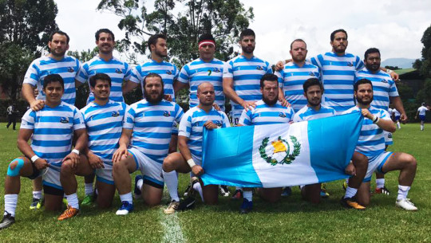
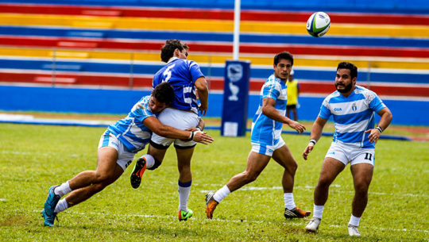

El ente regulador del rugby en Guatemala es la Asociación Guatemalteca de Rugby (AGR) que no está afiliada a la International Rugby Board (IRB). Actualmente la AGR tiene el estatus de Miembro Asociado de la Confederación Sudamericana de Rugby (CONSUR) mientras se encuentra en proceso de aceptación para integrarla como Miembro Pleno
2006 - 2007
En abril de 2007 el Rugby inició en Quetzaltenango Guatemala, gracias a la iniciativa de Josh Macy, Pedro Hecht y varios amigos guatemaltecos. El norteamericano había sido contratado por un colegio privado de esa zona, en el que desarrollaría las funciones de Director y catedrático. Junto a sus allegados chapines, una noche reunidos en un restaurante quetzalteco, decidieron empezar con los primeros entrenamientos formales del deporte, fundando así el primer club oficial de Guatemala, el "Xela Rugby Football Club".
Josh Macy, habiendo jugado durante sus años universitarios en los EE.UU pensó que sería una aventura interesante introducir un deporte de contacto, en un país en el que la sociedad desprecia y se aleja de los deportes considerados tradicionalmente fuertes. El Señor Macy, consideró que este paradigma social podía ser roto por la larga tradición de valores éticos y morales en los cuales se funda el Rugby.
2008
En febrero de 2008, por diferencias ideológicas y de expansión del deporte, de las charlas entre los miembros de "Guatemala Rugby Club" el equipo es segmentado en 3 vertientes. "Guatemala Rugby Club", "Antigua Rugby Club" y "Santa Rosa Rugby Club"; siendo así de esta forma, la más adecuada y lógica para poder gestar un campeonato nacional. El primer campeonato nacional da inicio en marzo del 2008, con la participación de: "Guatemala Rugby Club", "Xela Rugby Football Club", "Santa Rosa Rugby Club" y "Antigua Rugby Club". Se estructura en un campeonato simple, sin visita recíproca y se denomina Tornero Apertura. Los escalafones al terminar el mismo son: "Guatemala Rugby Club" campeón, "Xela Rugby Football Club" segundo lugar y "Santa Rosa Rugby Club" y "Antigua Rugby Club" ocupando el tercer y cuarto lugar respectivamente.
2009
El primer ciclo del año 2009, se reorganiza el sistema de competición del Torneo Nacional para poder afrontar la ausencia de "Antigua Rugby Club". Se acuerda que el torneo será disputado en dos fases, visitante y local para promover el aumento de tiempo de juego y experiencia de los participantes. Guatemala Rugby Club se vuelve a coronar campeón y Xela RFC ocupa el segundo lugar. Se realiza también por segunda ocasión, en el país, en julio la "Copa República Argentina seven a side" auspiciada por la Embajada y Consulado de esa nación pasando a ser esta una edición internacional. Cuenta con la participación de: "Tazmania A" y "Tazmania B" de México, "Diablos Rojos" de Panamá, Costa Rica "Bocaracas", "Guatemala Rugby Club", "Santa Rosa Rugby Club", "Xela Rugby Football Club", "Gringo Teachers" con un combinado de jugadores que eran parte del profesorado de diferentes colegios americanos y un combinado de jugadores integrantes de todos los equipos chapines. "Tazmania A" de México se corona campeón y el mejor conjunto nacional es "Guatemala Rugby Club" en el tercer lugar.
2010
En enero se formalizan los esfuerzos por parte de los clubes para lograr llamar la atención de los entes reguladores del deporte en Guatemala. Es un motivo de festejo para la "familia rugbier" guatemalteca el estreno y lanzamiento de la película dirigida por Clint Eastwood Invictus, basada en el libro "Playing the Enemy" ("El Factor Humano"), del periodista británico John Carlin; en el que relata la relación del expresidente sudafricano Nelson Mandela, el equipo nacional "Springbooks" y su capitán Francois Pienaar para lograr la reconciliación nacional a través de la IRB Copa Mundial de Rugby de 1995.
2011
El campeonato local de la temporada 2011 integra a Guatemala Quetzal Rugby Club, Guatemala Rugby Club, Santa Rosa Rugby Club, Torogoces A, Torogoces B. Los "Quetzales" de Guatemala Quetzales Rugby Club se coronan bicampeones nacionales invictos, repitiendo la actuación del Torneo Nacional 2010, seguidos de Torogoces "A" de El Salvador en segundo lugar y Guatemala Rugby Club en tercera posición.
La selección de rugby 7 se coronó campeona centroamericano en esta modalidad tras vencer a Costa Rica en una disputada final que se tuvo que definir en tiempo extra. Actualmente los Jaguares de Guatemala son los campeones de Centroamérica al no perder ningún partido y ganarle 2 veces en el mismo torneo al local Costa Rica y así coronarse como campeones invictos.
2012
Pese a no ser miembro pleno de la CONSUR, Guatemala recibió la invitación a participar del 7º Seven Sudamericano disputado en marzo en Brasil en calidad de campeón centroamericano del 2011. Perdió los partidos de clasificación frente a Perú, Argentina, Chile y Colombia y obtuvo la victoria frente a la también debutante selección de Ecuador 36 - 10 por el 9º puesto. En el plano nacional, San Josemaría Rugby Club disputó la final con Guatemala Rugby Club. El marcador resultó positivo para los primeros permitiéndoles ganar el torneo como invictos.